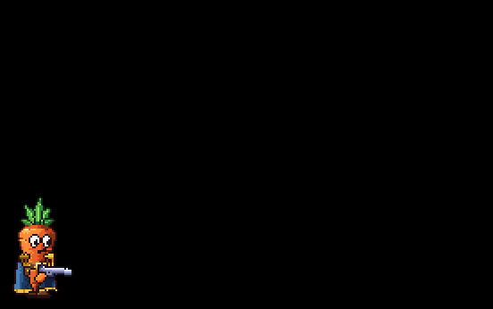
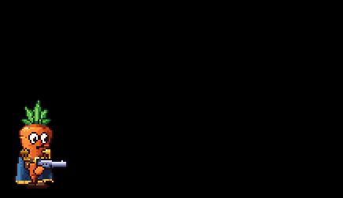
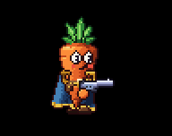
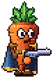

The Carrot
Every player is a carrot: a hand-shaded, squashy, pixel-art carrot in a cape and boots, holding a gun in its floating hands. Up to three carrots play together online. Each one runs and jumps on platformer physics, dashes through danger, and recharges its health when it stays out of trouble.
Controls
| Key | Does |
|---|---|
| A / D | Run left and right |
| Space or W | Jump; press again in mid-air to double jump |
| S | Drop down through the plank you're standing on |
| Shift | Dash the way you're steering (or facing) |
| Mouse | Aim; the carrot faces wherever you aim |
| Left click | Shoot |
| R | Reload |
| Q, or 1 to 4 | Next gun, or pick a gun |
| Right click or G | Throw a grenade |
| H | Hide or show the controls line |
Pages
- Movement: running, jumping, the double jump and dropping through planks.
- Dash: the quick burst that makes you briefly untouchable.
- Health: taking hits, recharging, being knocked down and the squad wipe.
- Appearance: how the carrot is drawn and animated: its face, cape, epaulettes, belt, boots and footsteps.
The guns it carries are on the Weapons pages.
Co-op
Each player's own machine runs their carrot, so moving, jumping and dashing always respond instantly. Everyone else sees that carrot from streamed updates, smoothed out, with the same animation, so a teammate's cape and boots move just like yours.

MovementHow the carrot runs, jumps, double jumps and drops through planks, on fixed-step platformer physics.
DashA quick horizontal burst that makes the carrot untouchable for its whole length, so you can dash straight through attacks.
HealthEvery carrot has a recharging shield over its health. Hits drain the shield first; once it breaks, hits cost health, and at 0 health the carrot is knocked down.
AppearanceHow the carrot is drawn and brought to life: a per-pixel shaded body with a face, a cape, gold epaulettes, a belt and floating boots that all move as it runs, jumps and dashes.